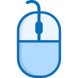

SuperScroll8 presets from a careful reading pace to 10,000 px/s, keyboard shortcuts, and auto-pause the moment you touch the page yourself.
Eight speed presets, from a careful reading pace up to speeds that bypass normal browser scroll throttling entirely.
Alt+S to toggle, Alt+↑/↓ to pick a direction, Alt+P to pause — no need to reopen the popup mid-scroll.
Touch the page yourself — wheel, click, or a key — and scrolling stops immediately.